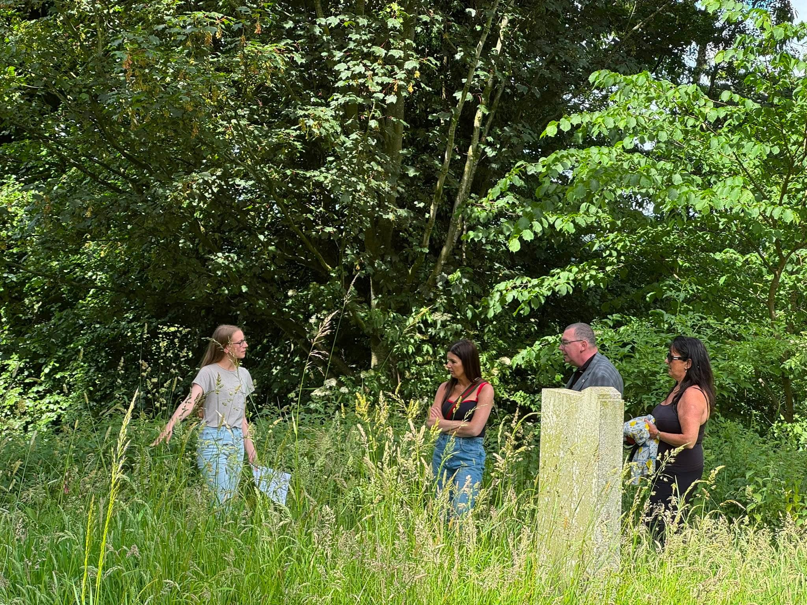
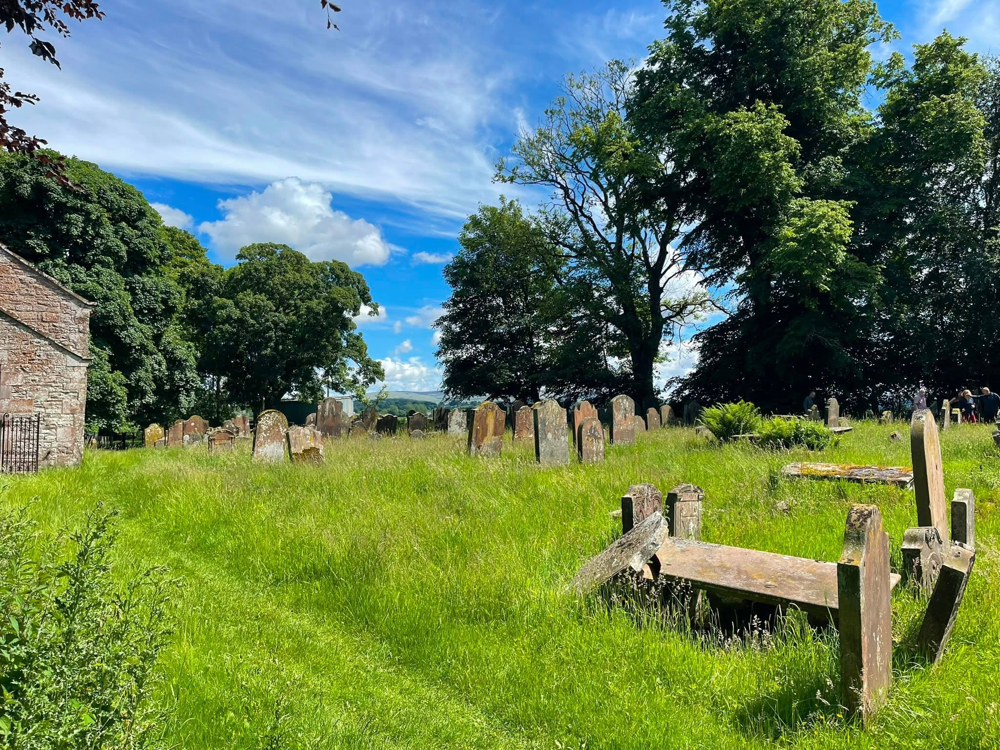
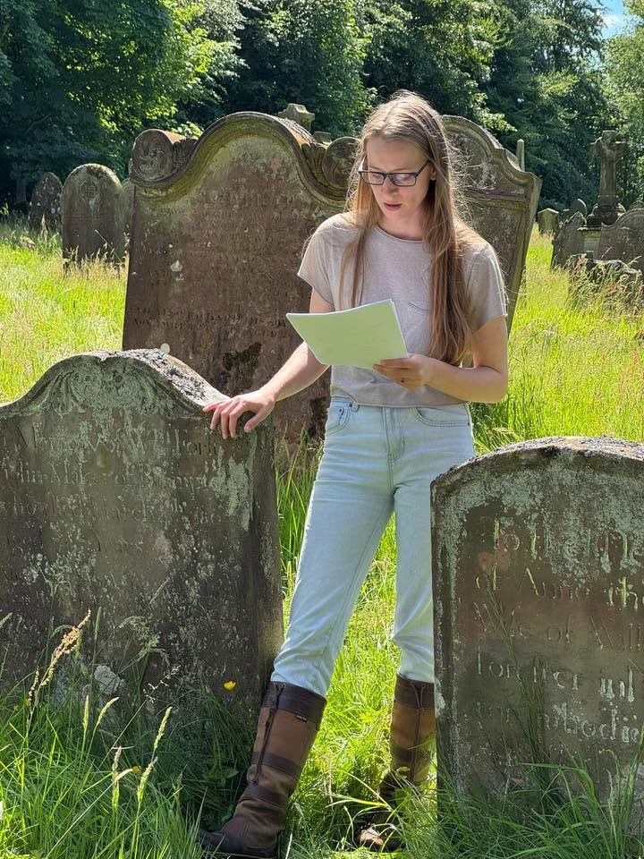
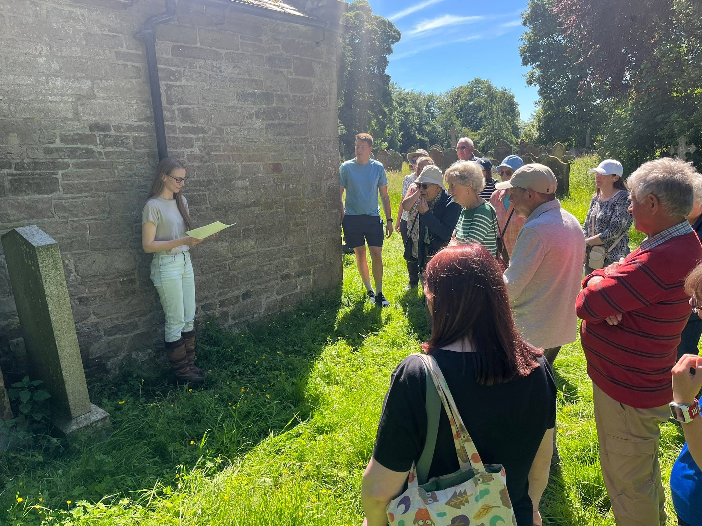

On Saturday 20 June 2026, Brampton Preservation Trust held an open afternoon at Brampton Old Church. I had been invited to lead two graveyard tours and added a third when the first tours filled. I wanted the walk to concentrate on the lives behind the memorials: the work people did, the choices they made and the events that reached them in Brampton.
Who made Brampton?
As we walked through the churchyard, I asked visitors to consider the question, “Who made Brampton?” The people buried there included craftspeople, writers, sailors, soldiers, churchmen and ordinary townspeople whose stories have survived by chance. Together, their lives allowed us to trace Brampton’s history from the medieval Anglo-Scottish border, through the Jacobite rising, Victorian industry and religion, and into the two world wars.
Each memorial gave us a way into a larger story. We looked at livelihoods and beliefs, journeys beyond Cumberland, the effect of national events on a small market town and the many individual lives that shaped the community over time.
Medieval border life
We began with the oldest stone on the tour, believed to be medieval. It carries a carved cross and sword. When it was recorded in the late nineteenth century, the initials “A.M.” were apparently still visible. The antiquarian Henry Whitehead suggested that they might have belonged to Andrew Milburn of Talkin, a member of a well-known local family, although that identification cannot be proved.
The stone matters even without a certain name. For much of the Middle Ages, Brampton stood close to a dangerous frontier. Raids, feuds and warfare were recurring features of life along the Anglo-Scottish border. The cross speaks of Christian identity, while the sword may suggest status, military association or the way the deceased wished to be remembered.
Standing in the peaceful churchyard today, it is difficult to imagine generations of local families living with the threat of violence. The stone gives us a physical link to that very different Brampton.
Craft, music and Jacobite memory
William Forster and the “Fiddle Forsters”
William Forster, who died in 1801, appeared at first to be an ordinary Brampton craftsman. He made spinning wheels, gunstocks and fiddles, but his family became celebrated violin makers and musicians known as the “Fiddle Forsters”.
His son, William Forster Junior, moved to London and developed a successful instrument-making business. He received a royal warrant from the Prince of Wales, later George IV, and made instruments for the royal household. Violins made by the family continue to appear at auction.
The inscription on William Senior’s stone identifies him simply as a “Violin Maker in Brampton”. His story reminds us that eighteenth-century Brampton was connected to markets far beyond Cumberland. Skilled work produced in this small town could travel hundreds of miles and reach some of the most prestigious musical circles in Britain.
John and Margaret Richardson
We ended the tour with one of Brampton’s most colourful traditions. Margaret Richardson, born Margaret Ewing around 1729, was said to have arrived with Bonnie Prince Charlie’s Jacobite army in 1745. According to local accounts, she remained in Brampton after the army moved on and later married the local farmer John Richardson.
Stories accumulated around Margaret after her death. She was variously described as a woman of concealed noble birth, an unconventional outsider and even a witch. Her reputed epitaph was so irreverent about churchyards and clergy that church authorities were said to have ordered part of it removed. Whether every detail can be established or not, the tradition preserves the memory of a strong and independent personality.
Margaret's story sits at the point where genealogy and local folklore meet. The later traditions tell us how Brampton remembered her, while parish, legal and other contemporary records offer a way to check which parts can be placed on firmer ground.
Victorian Brampton and a wider world
The loss of the Geltwood
The memorial to Mary Harrington brought the wider Victorian world into the churchyard. Mary and her husband, Captain Francis Frederick Harrington, were lost in 1876 when the Geltwood was wrecked off South Australia on its maiden voyage from Liverpool to Melbourne.
The Cumberland-built iron sailing ship carried twenty-eight crew members, one passenger, a mixed cargo and the captain and his wife. Everyone aboard died. News took weeks to reach Britain, while wreckage and possessions were scattered along the Australian coast. Reports of looting and rumours that people may have survived temporarily on the wreck added to the tragedy, although some details remain debated.
For families in Brampton, the disaster made a distant event intensely local. It showed that Victorian residents travelled, traded and worked across the world—and that global connections could bring both opportunity and loss.
Peter Burn: writer, historian and community builder
Peter Burn, born in Brampton in 1830, was one of the people who seemed to be involved in almost every aspect of Victorian town life. He was a businessman, poet, novelist, lecturer, local historian, parish councillor and political campaigner.
He collected folklore, recorded traditions and helped preserve details of Brampton that might otherwise have disappeared. He also supported practical improvements, including the naming and numbering of streets, and worked closely with his friend Henry Whitehead. His memorial carries words from his own writing: “Tasks fulfilled win peaceful slumber.”
For a man remembered for giving his time, energy and encouragement to the town, it is a particularly fitting epitaph.
John Armstrong and the changing nineteenth century
John Armstrong’s long life, from 1817 to 1908, spanned enormous social and technological change. He began as a hatter and travelled by stagecoach to London to improve his trade. Over the years he was connected with Brampton’s gasworks, worked as a brewery traveller and later became a nurseryman.
He was also active in sport, the Volunteer movement and the local Oddfellows. Friendly societies such as the Oddfellows provided help during sickness, unemployment and bereavement before the modern welfare state. Through John’s life, we can see how ordinary residents adapted to change and created the institutions that kept a community functioning.
War, service and personal conviction
Thomas Pratt: soldier, postman and a missing grave
Thomas Pratt was born on Christmas Day 1829 and enlisted in the 95th Derbyshire Regiment in 1852. He was wounded at the Battle of Alma during the Crimean War and later remembered encountering Florence Nightingale while recovering in hospital. He subsequently served in India and kept a detailed diary covering the years from 1857 to 1863.
In Brampton, however, many people knew him not as a soldier but as a postman serving Lanercost and Easby. He was buried at the Old Church in August 1919, yet his grave has not been identified. His memorial may have been lost during the landslide that affected part of the churchyard in the 1960s.
Joseph Bell Dickinson: conscience during the First World War
Joseph Bell Dickinson, a lithographic artist and active member of his church and Sunday School, became a conscientious objector during the First World War. When conscription was introduced, he refused military service on grounds of conscience and appeared before magistrates in 1916.
Conscientious objectors often faced ridicule, hostility and social isolation. Joseph's experience brings those arguments about duty, belief and patriotism down to the level of one Brampton household and one man's decision.
John Clifford North-Lewis: a future interrupted
John Clifford North-Lewis trained as a solicitor before joining the Royal Air Force Volunteer Reserve in 1941. In May 1943, aged twenty-nine, he was killed when the Whitley bomber he was piloting suffered engine failure during a training flight off Scotland.
He had married only five months earlier, and his wife was expecting their first child. Eleven days after John’s death, his twin brother’s aircraft was shot down over occupied Belgium. His brother survived but spent the remainder of the war as a prisoner in Germany.
Standing at John’s grave transformed the statistics of war into the story of one family: a young widow, a child born after his father’s death, one twin killed and the other imprisoned.
Henry Whitehead and the preservation of Brampton’s memory
Many of the stories on the tour survive because of Reverend Henry Whitehead. Before becoming Vicar of Brampton, Whitehead served in Soho during the 1854 cholera outbreak. His detailed interviews and local investigation helped support Dr John Snow’s conclusion that contaminated water from the Broad Street pump was spreading the disease. Their work is now regarded as a landmark in epidemiology and public health.
Whitehead arrived in Brampton in the 1870s and immersed himself in the town’s religious, educational and cultural life. He collected inscriptions, examined parish records, investigated folklore and spoke to older residents whose memories reached back into the eighteenth century.
He also helped oversee the transition from the Old Church to the new St Martin’s Church. Internationally, he is remembered as a public-health pioneer. In Brampton, he was remembered as a vicar, neighbour, historian and friend. Every time we use the evidence he preserved, we continue to benefit from his curiosity and care.
Photographs from the day
Brampton Old Church Open Day




Visitors found their own family connections
The open afternoon gave visitors the opportunity to explore the church and churchyard, ask questions and share memories. One of the most rewarding parts of the day was hearing that people had located family graves while they were there.
Ray Gregory found the grave of the Latimer family on his mother’s side and was pleased to discover that the headstone remained in good condition. Louise Crawford and her uncle found two family graves. Discoveries like these turn a general history event into something deeply personal.
What visitors said
“Really enjoyed both tours. Brittany’s in particular was very interesting and her presentation vividly brought to life the remarkable locals who shaped the area we live in.”
— Catherine Gosson-Low
“A very interesting and enjoyable afternoon, made all the more so in that I found the family grave, that of the Latimer family on my mother’s side.”
— Ray Gregory
“Really enjoyed it! My uncle and I also managed to find two family graves while we were there. So interesting!”
— Louise Crawford
Another visitor, Tracey Ann, described the afternoon as very enjoyable. I was especially pleased that several people left the general history of the tour to search for their own relatives in the churchyard.
What the memorials can tell us
The tours covered only a fraction of the churchyard. Most of the people buried there were craftspeople, writers, sailors, clergy, soldiers and local families whose names rarely appear in national histories. Their records are part of the history of Brampton itself.
A gravestone can supply dates, relationships and a physical place in the landscape, though inscriptions can contain errors and many graves have disappeared. For family-history work I compare the memorial with parish registers, civil certificates, wills, censuses, newspapers, military records, estate papers and material held by Cumbria Archives.
Put together, those sources can recover something of a person's working life, family and community instead of leaving the story at the date on the stone.
Supporting the preservation of Brampton Old Church
The afternoon was made possible by Brampton Preservation Trust and the volunteers and supporters who organised the event, welcomed visitors and continue to care for the church. Their work helps preserve the site so that its history can be shared with future generations.
I was very pleased to contribute to the open day and to see such strong interest from the local community and visitors from further afield. You can learn more about the Trust’s work and future events on the Brampton Preservation Trust website.
Researching a family connected with Brampton?
If your ancestors lived in Brampton or elsewhere in historic Cumberland, a churchyard may be only one part of the evidence. Parish registers, wills, newspapers, census returns, estate papers and records held by Cumbria Archives can help build a fuller and more reliable family story.
I have extensive experience working in Cumbria Archives and researching families from Brampton and the surrounding region. If you have a family-history question, an unidentified grave, a difficult local ancestor or a collection of records you would like help interpreting, you are welcome to send me an enquiry.